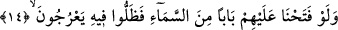
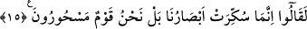

Müftî Sa‘dî ise şöyle der: Tıpkı: “Tanıdıkları şey geldiğinde, onu hiç bekleyip
düşünmeksizin hemen inkâr ettiler.” (el-Bakara, 2/89) âyetinde olduğu gibi ‘İşte
böylece Biz onu vahyedilir edilmez durup düşünmeden hemen o zamanda yalanladıkları
bir şey olarak suçluların kalplerine sokarız.’
et-Te’vîlâtü’n-Necmiyye’de şöyle der: “İşte böylece Biz onu, (inkârcılığı)
suçluların kalplerine sokarız. Onlar ise hâlâ buna (Kur’an’a) inanmıyorlar.” Çünkü
amel-i salih sâyesinde kalblere îmân girdiği gibi suç yüzünden de küfür girmektedir. Bu
âyetin benzeri: “Hayır! Allah bunların kalplerini küfürleri yüzünden mühürledi,
artık pek azı hâriç îmân etmezler.” (en-Nisâ, 4/155) âyetidir.”
“Kendilerinden öncekilerin âdeti geçti.” Yâni onlar yalanlama ve alay etme
konusunda yaptıklarını yapınca, Allah’ın onları helâk etme hususunda çizdiği yolları
geçti. Yâni, onlardan kim helâk olduysa Hakk’ı kabûlü terk ve peygamberleri
yalanladığı için helâk oldu.
Burada alaya almaları ve yalanlamaları yüzünden Mekkelilere tehdîd vardır.
Ömrümde asla işitmedim
Ki kötü adamın önüne iyilik gele
14. Onlara gökten bir kapı açsak da oradan yukarı çıksalar,
Onlara gökten bir kapı açsak da” Yâni, “bize melekleri getirmeliydin” diye teklif
getiren bu inâdcılara bilinen gök kapılarından değil de herhangi bir kapı açsaydık ve bu
kapıya yükselip çıkmalarını kolaylaştırsaydık da “oradan yukarı çıksalar,” yâni bu
kapıya doğru herhangi bir âletle yahut âletsiz olarak çıkacak olsalar ve gökteki hayret
verici şeyleri gözleriyle görselerdi, ya da melekler bu kapıya doğru yükselmeye başlasa
ve onlar da melekleri görselerdi…
Yâni gelmelerini istedikleri melekler bu kapıya doğru yükselseler, onlar da bütün gün
boyunca bu yükselişi kendi gözleriyle apaçık sûrette görecek olsalardı… Nitekim
Kâşifî der ki: “İmdi onlar her gün meleklerin yerden göğe yükseldiğini, gökten de yere
indiğini görseler…”
15. “Gözlerimiz boyandı, daha doğrusu bize büyü yapılmıştır.” derler.
Aşırı inâdlarından ve hak konusundaki şüphelerinden dolayı “Gözlerimiz boyandı”